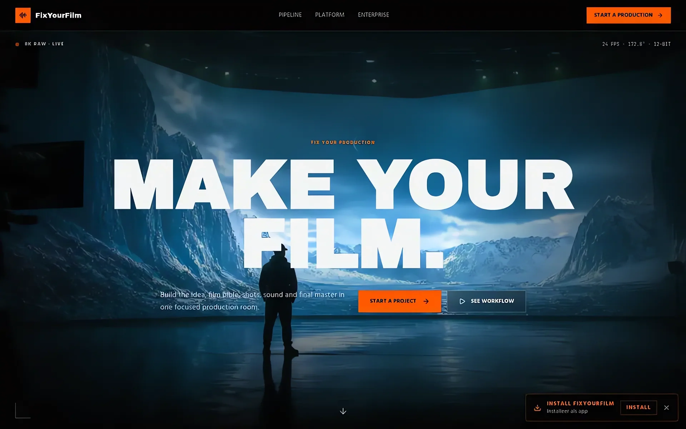
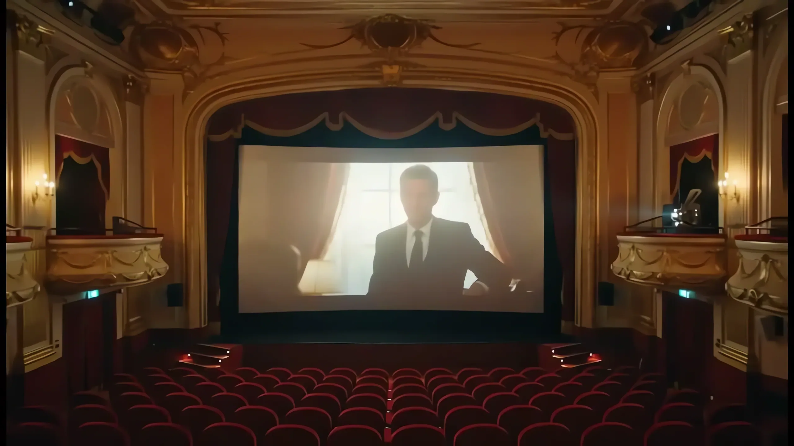

Case Closed
AI-filmPlatformPipeline
FixYourFilm: AI-films op maat, van idee tot 4K-master.
Status: XXXX opgeleverd. Contact: daniel@filmforge.nl

FixYourFilm is het FilmForge-initiatief voor custom AI-films. Eén productieketen — idee, storyboard, generatie, editor-afwerking, master — zonder kwaliteitsverlies tussen handoffs. Live galerij met mastered films en losse shots op fixyourfilm.today.
